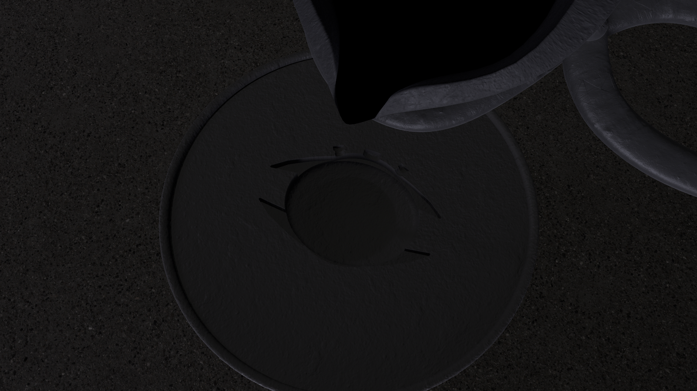
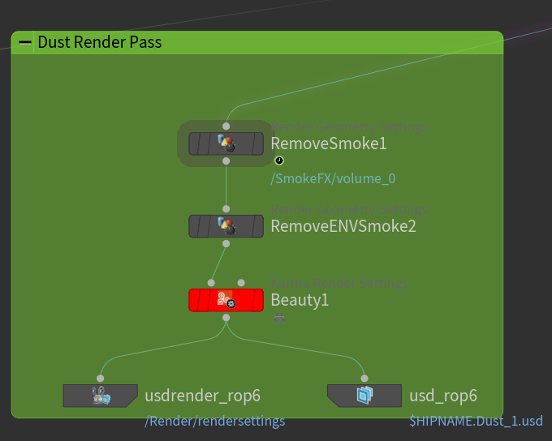
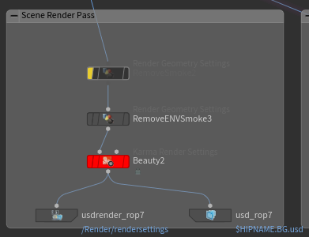
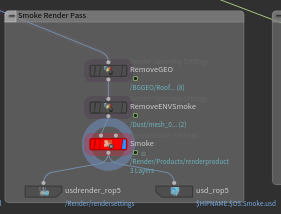
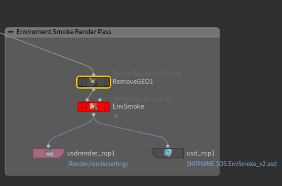
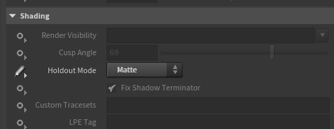
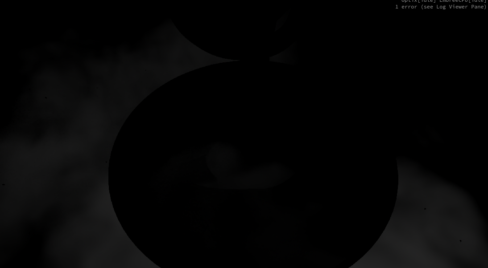

← 部落格 × Harbour
Bomin Kim（特效）

第 8 周
团队成员
3 月 1 日
Bomin Kim（特效）
Caleb Stovall（3D／2D）
Mojie Tang（特效）
Sydney Relkin（合成）
Yiqi Zheng（特效）
SCAD × HARBOR － 第 8 周
大家好，这是我 SCAD × Harbor 部落格的第八周！
导师回馈：
Luke：
-
镜头 1：加强景深（加入颗粒、细微的曝光光晕）
Hailey：
- 镜头 1：背景失焦／前景清晰
- 镜头 1：火花是黑色的，看不出是火花
- 镜头 6：方形反射感觉怪怪的／灯光有进步
- 镜头 2／3：地板材质太平
Kyle：
-
镜头 1：修正炉口边缘的棱角
-
背景到前景的模糊需要改善
-
火焰没有融入画面：蓝光、镜头上的热光晕、热雾
-
火花应该要发光
-
在镜头 1 结尾加入摄影机运动
-
镜头 5／6：更多景深
-
修改 logo，要更现代
-
影片输出 23.98 fps，不是 30 fps
镜头 2 和 3 我更换了地板材质并加大 displacement，现在看起来不再那么平。

这周我主要协助 Caleb 算出不同的 pass 给合成用。我把场景拆成六个部分，让 Nuke 中的控制更有弹性，并用 Render Geometry Settings 分离出需要的物件。




环境烟雾的部分，需要底部的锅子把它挡住，所以要加一个 matte。这是 pass 的样子。


另一个算图上的麻烦是记忆体有限，存档时一直当机。所以我先把不同物件分开，再依影格范围拆分 USD 档，这样输出就顺利了。